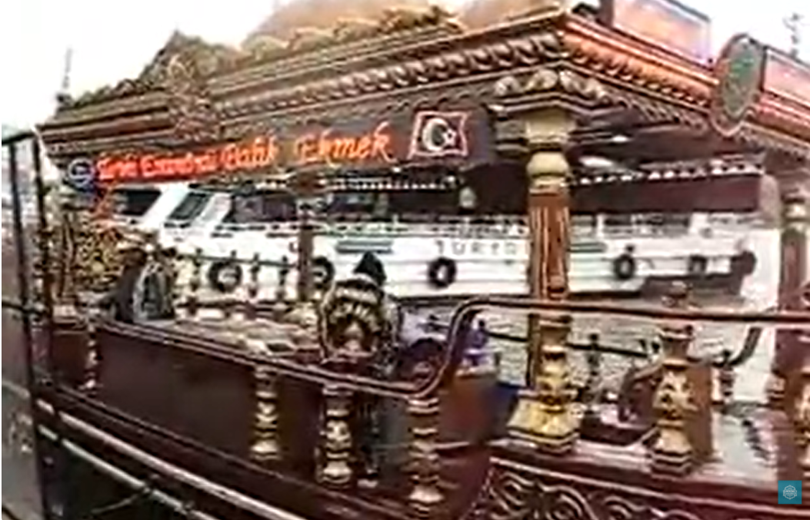
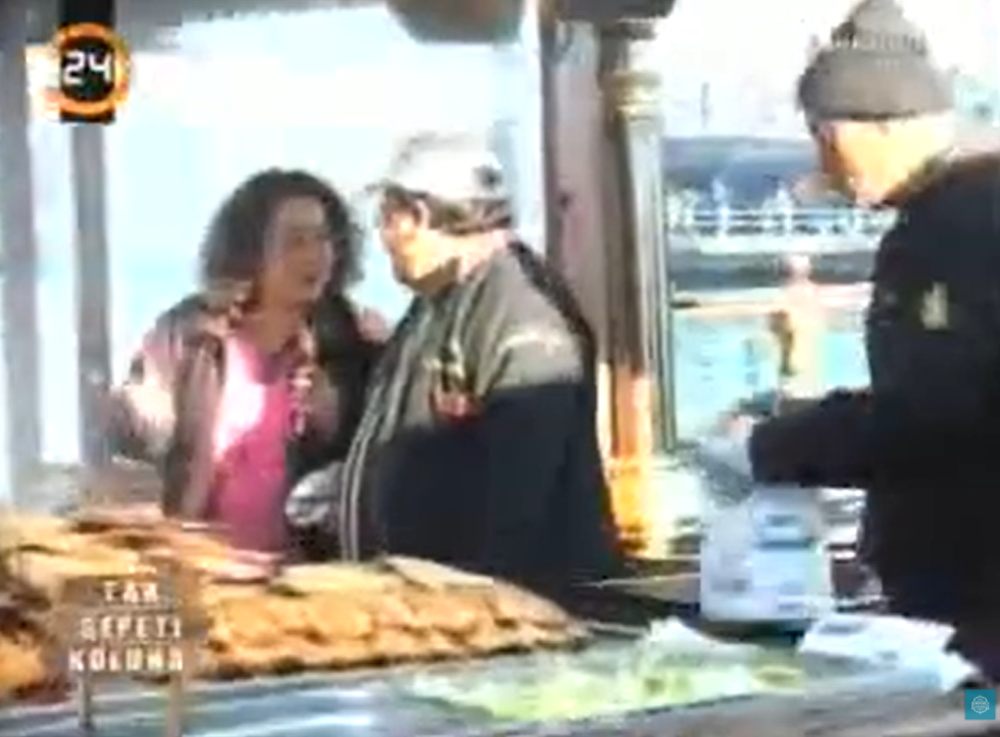
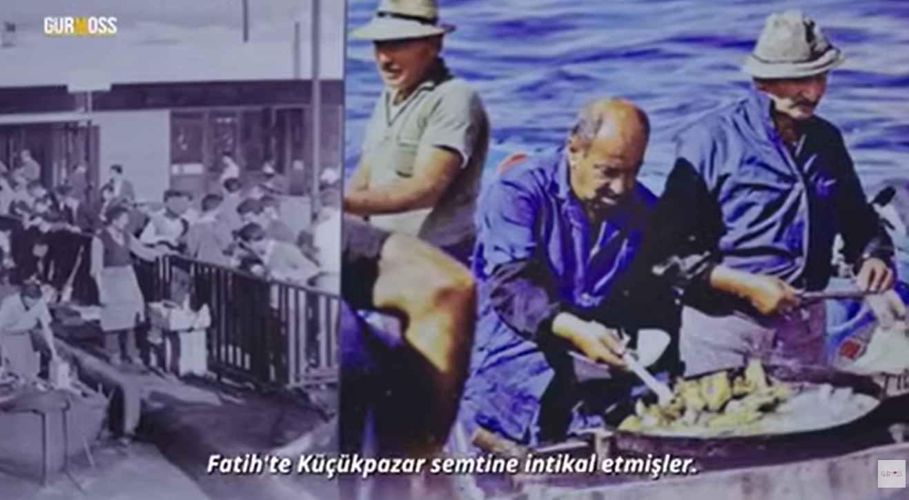
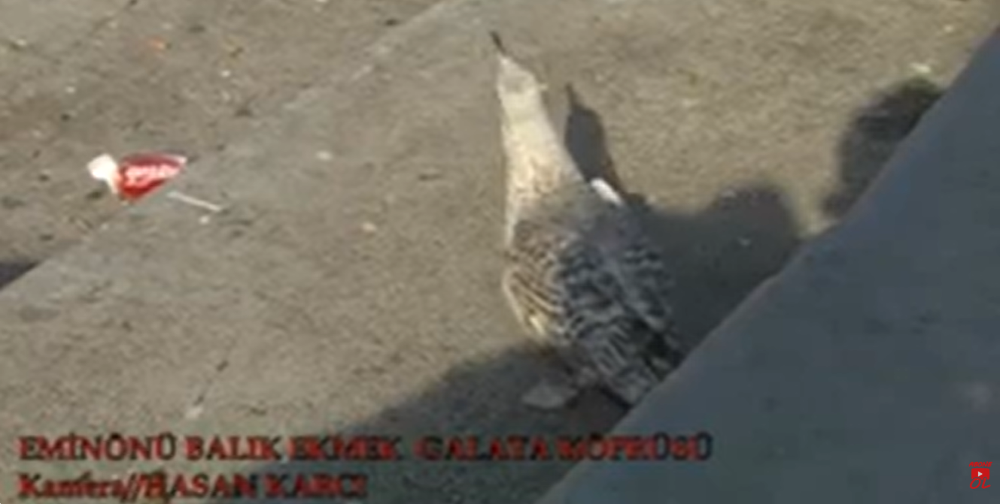
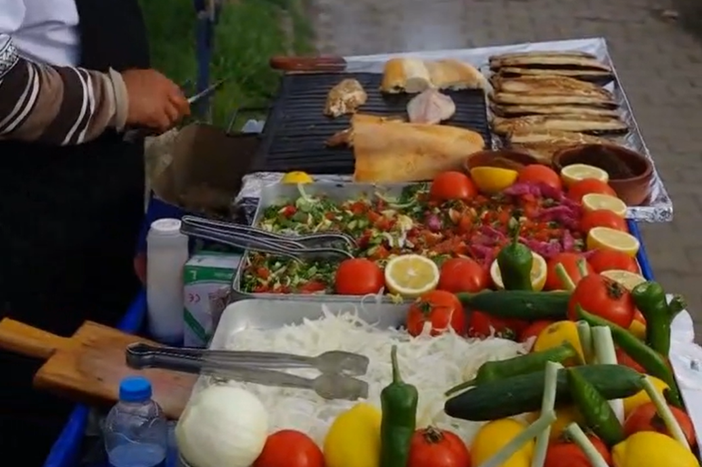

Belgeseller
Eminönü Balık Ekmek’in köklü mirasını, kıyı kültürünü ve usta ellerde yaşatılan geleneğini anlatan belgeselleri keşfedin.

Tarihi Eminönü Balık Ekmek
2014
Davetsiz Misafir: Turgay Başyayla Eminönü Ziyareti
2014
Tarihi Eminönü Balık Ekmek
2014
Tarihi Eminönü Balık Ekmek
TV 24 Belgeseli
Eurosport – Pass Sport Programı
İstanbul çekimi · 1.44 dk.
Balık Ekmek Geleneğinin Tarihsel Görünümleri
Guross TV Belgeseli
Eminönü Balık Ekmek ve Galata Köprüsü
Hasan Karcı